The diorama is based on one of the creative escapes across the Berlin Wall, which I found particularly influential because it displays unwavering familial love and the skill of working with little. In 1989, two brothers, Holger and Ingo Bethke, who had already escaped from East Berlin, flew a homemade ultralight aircraft from West Germany into East Germany and then out again, picking up their brother Egbert. I loved how, despite having already escaped, they decided to still save their brother. Buying the ultralight aircraft also required selling all of their possessions, which I find a noble example of radical resourcefulness and determination.
One major goal of the design was to create contrast between the cities to display both the true and metaphorical social divide that the wall created. The west side is alive with color, painted murals, green grass, and a bright blue and yellow building. The east side is gray, covered in litter, windows near the wall bricked up so nobody inside could see what freedom looked like. In the middle, between those two vastly different worlds, is all the evil defenses put between people and escape: the watchtower, the patrol path, the anti-vehicle trenches, the barbed wire, the death strip, and the control strips.
The foam for the whole base came from scrap left over from an acoustic engineering project my dad had done. The problem was that it came in one thick sheet, so I had to use a jigsaw to cut it down into the right shapes and layers. Before cutting anything, every zone — the east wall, patrol path, dirt strip, control strips, sidewalk, park — was mapped out in masking tape on the foam.
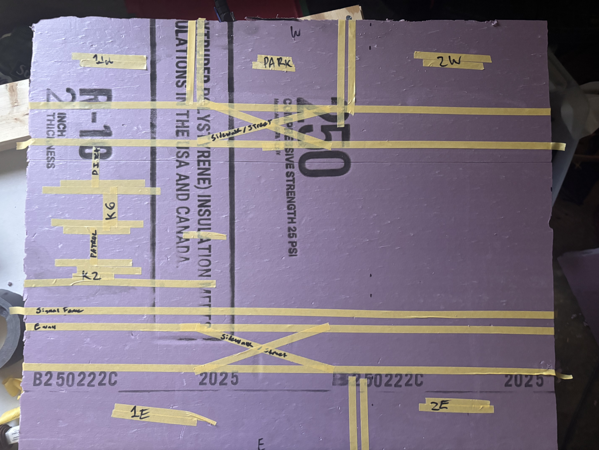
every zone planned in tape before a single cut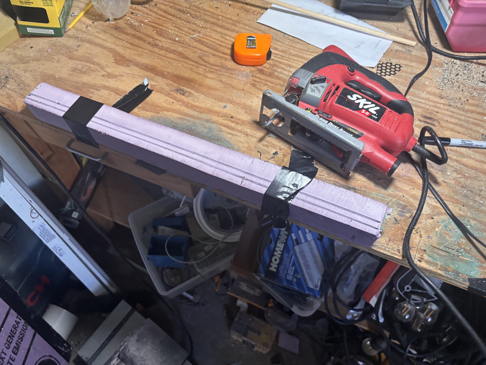
after the jigsaw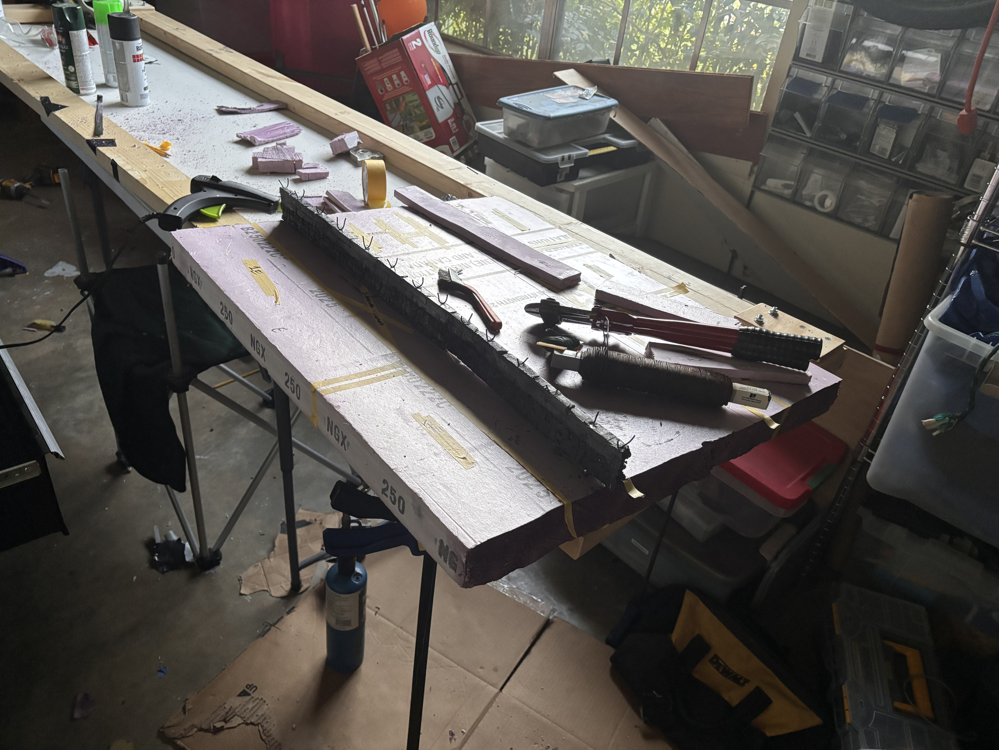
east wall section — the full scale of it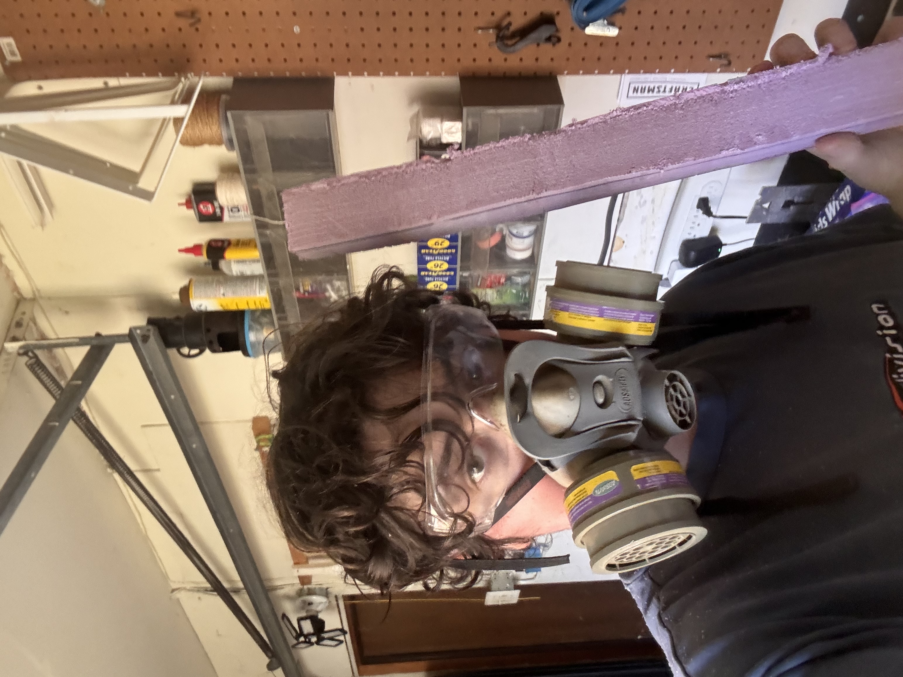
full PPE — foam particles are no jokeThe section between the two walls took the most research and the most time. Every element in the death strip was real and had to be right. The anti-vehicle trenches were carved foam painted brown with real soil modge-podged on top. The barbed wire was floral wire coiled around a pencil, then stretched out. The watchtower is hand-sculpted clay atop a piece of PVC pipe, painted, and sitting on a carved foam base. The anti-vehicle hedgehogs were popsicle sticks cut and spray painted. The control sand strip, which guards could rake to detect footprints, was made by laying down string, taping over it to keep the string in place, painting the sand color, then adding real sand with modge-podge.
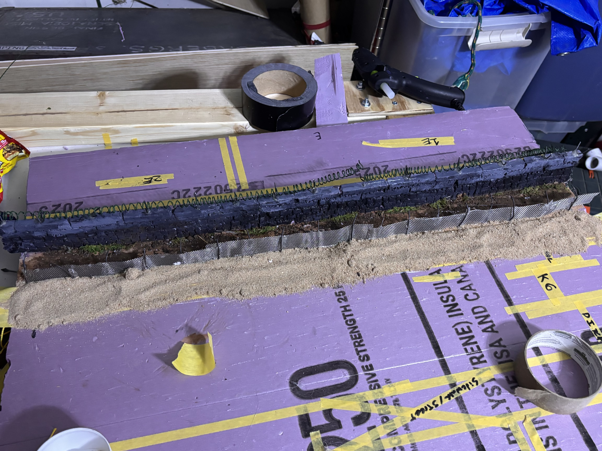
east wall to first control strip — every layer visible at once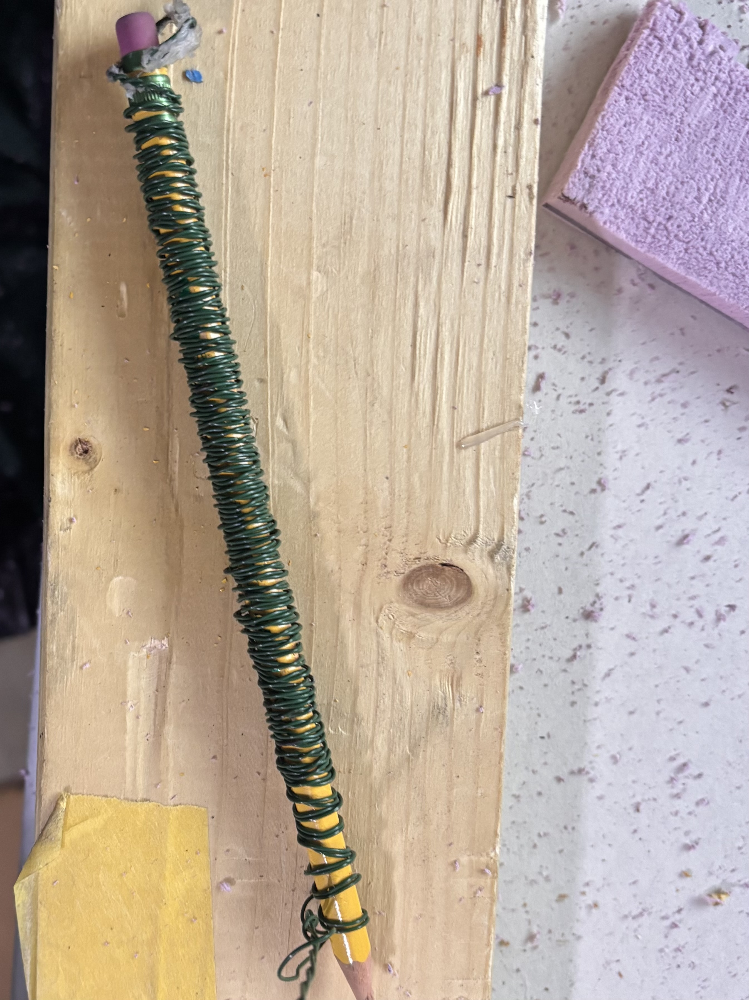
barbed wire: floral wire coiled on a pencil, then stretched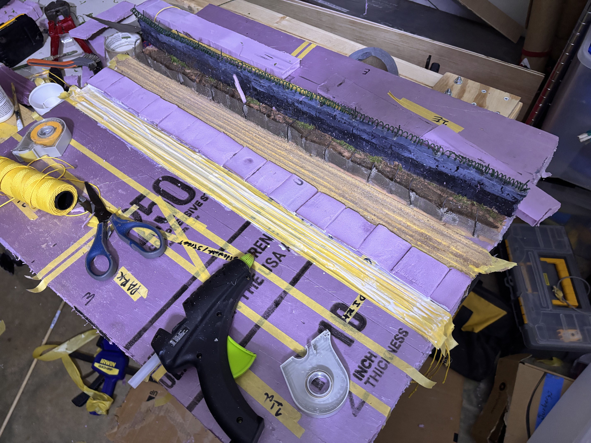
one strip done — laying string for the next sand technique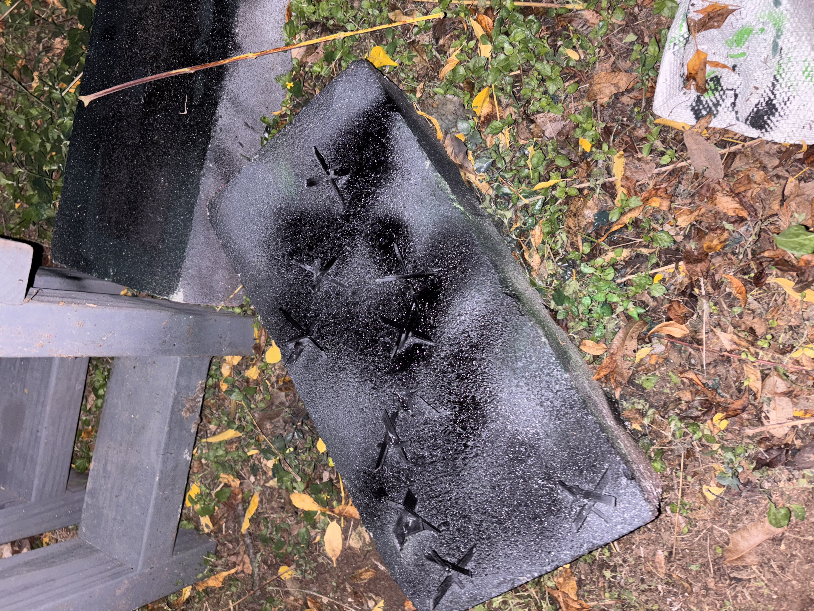
hedgehogs: popsicle sticks, spray painted black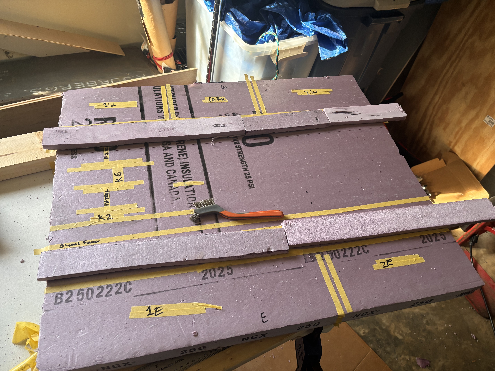
foam sections laid out, wire brush for texturing grassSuspended above the whole diorama on a dowel is a model of the Microlight Fox II, the actual aircraft the Bethke brothers used. The frame is made from dowel pieces and wooden skewers. The nose cone came from an old cold brew can. The windshield is cut from a plastic binder sheet. Wings are cardboard. The whole thing is camouflage spray painted in dark green, light green, and black, with metal parts hand painted gray. The wheels are a mix of custom 3D printed parts and LEGO motorcycle wheels. Red Soviet Union stars, printed and modge-podged on the wings and tail, are a nod to the irony of the whole escape.
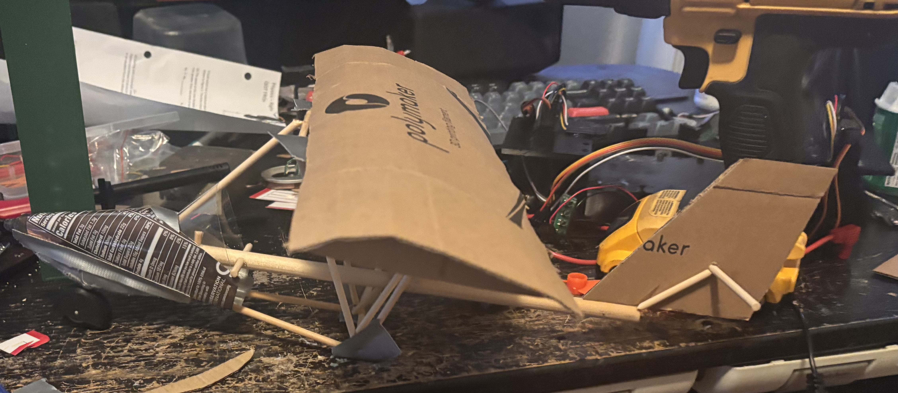
before paint: cardboard wing, cold brew can nose, dowel frame — all scrap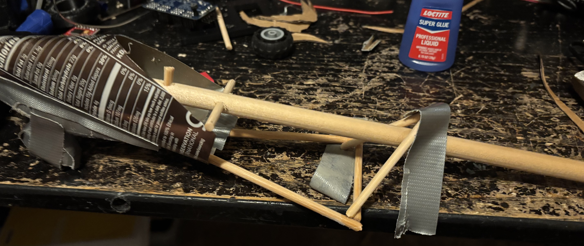
frame mid-construction — skewers, super glue, cold brew can nose cone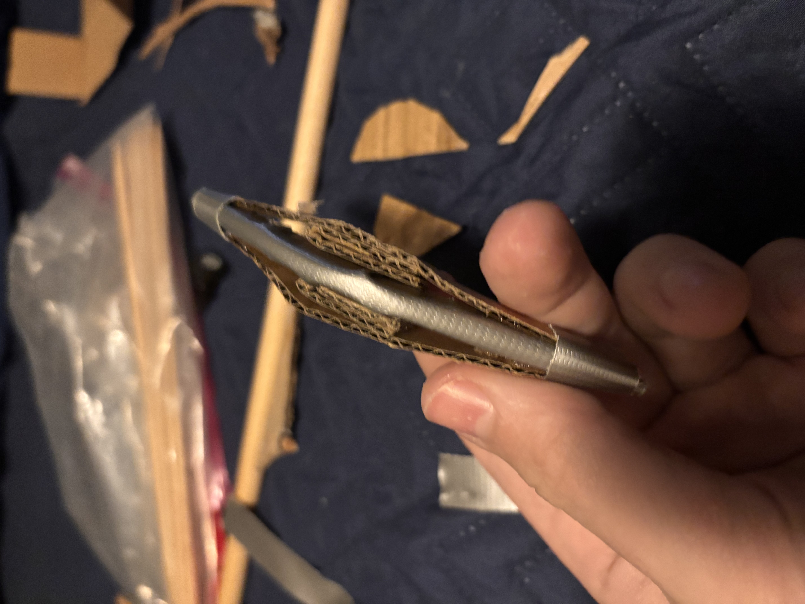
wheel fairing prototype before 3D printing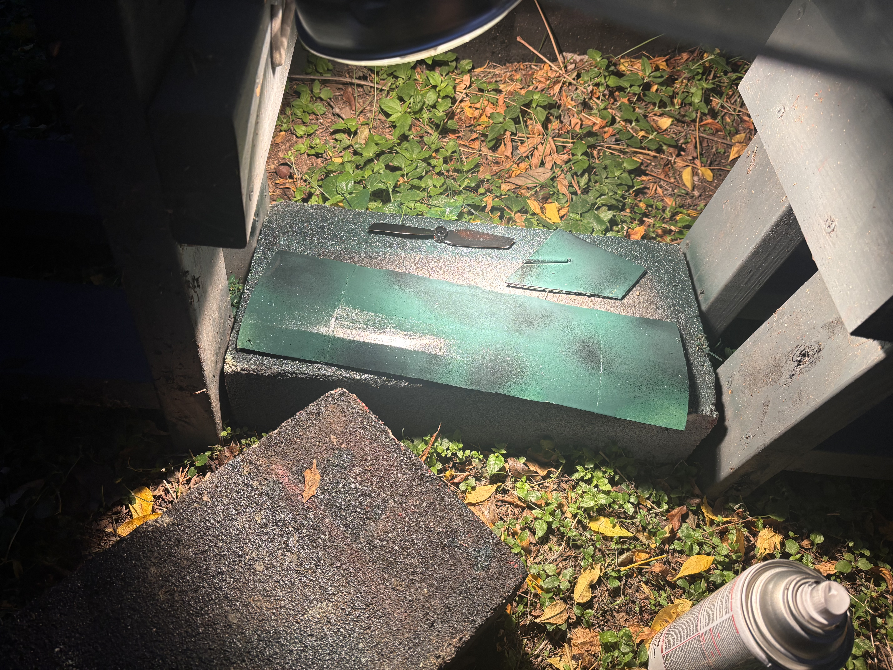
camouflage going on the wing at night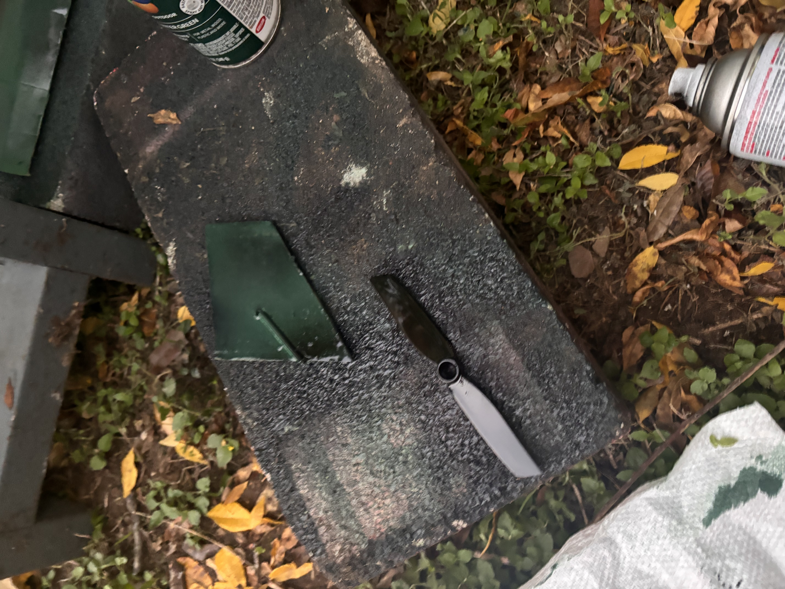
propeller and tail sections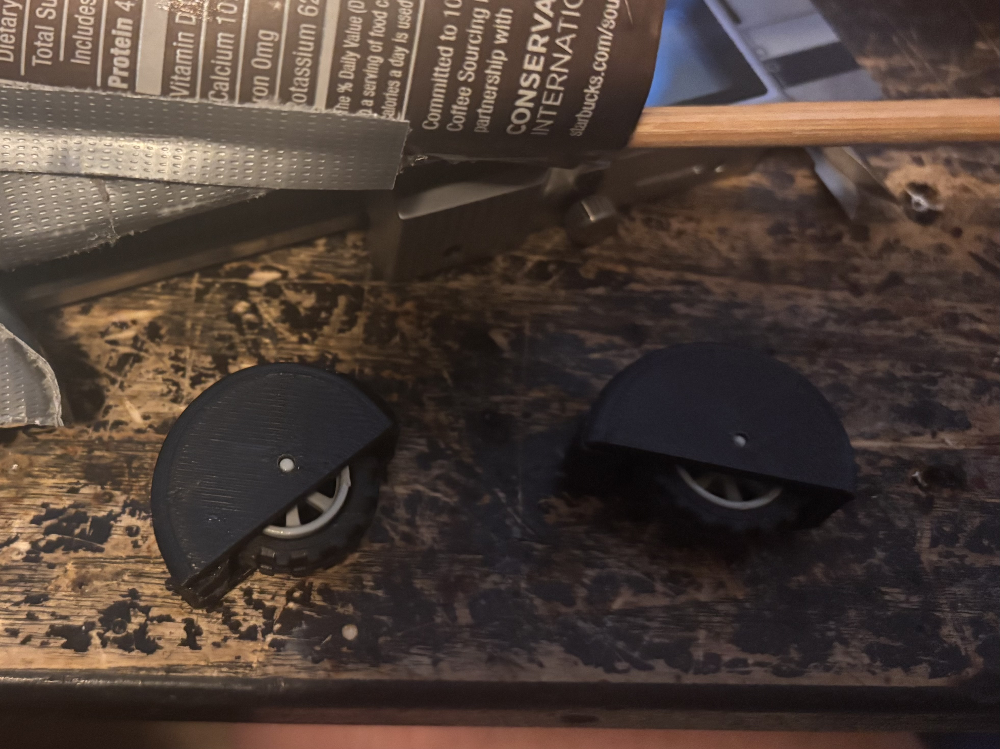
finished wheels: 3D printed fairings over LEGO motorcycle wheelsFrom there, it was days of carving, painting, texturing, and adding detail. Stop signs, pieces of litter, asphalt texture on the east side streets.
The hardest part was keeping track of what was actually historically accurate. The death strip layout, the specific wall shapes on each side (smooth concrete pipe on top, brick pattern below), the soldier patrol path. Getting those details right was part of what made it a competition piece and not just a model.